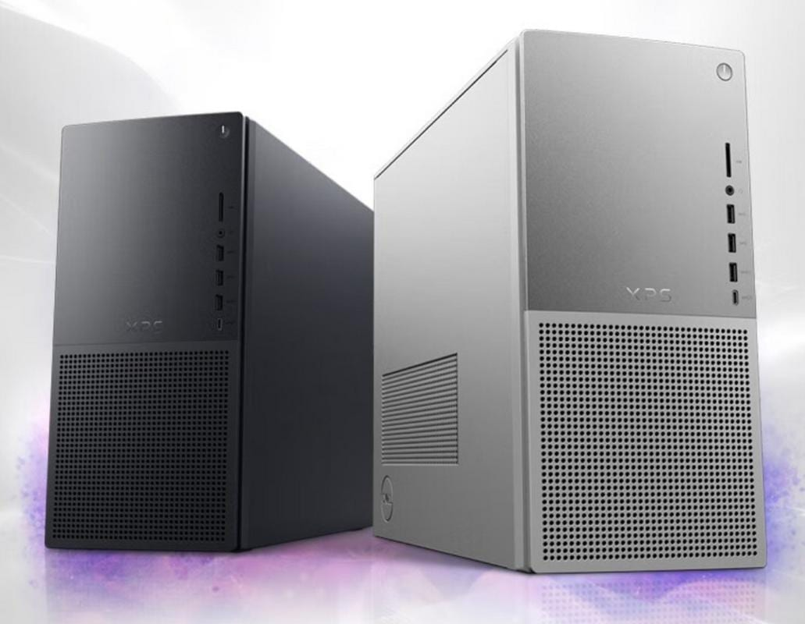

戴尔 XPS 8960

戴尔 XPS 台式机家族的 2023 款，13 代酷睿与 RTX 40 系显卡可选，面向设计师与家庭高端用户。极简白色机箱内部风道优化，运行安静；接口与硬盘扩展位充足，支持内存与显卡后续升级，是兼顾颜值、静音与生产力的全能型整机。
客观评测
XPS 8960 延续该系列的极简路线，配置覆盖 13 代酷睿与 RTX 40 系显卡，i7-13700 与 RTX 4070 的版本可在 2K 高画质下流畅游戏并胜任视频剪辑与 3D 建模。实测日常办公噪音低于 35 分贝，双烤时风扇声约 43 分贝，静音表现优秀。32GB DDR5 内存与 1TB SSD 属创作标配，内部预留内存插槽与硬盘位，升级空间良好。整机用料扎实，接口面板齐全，前置 SD 卡槽对摄影用户友好。
主观点评
把它放在桌面上几乎感觉不到它的存在，安静得让人忘了这是台独显整机，剪片导出速度也足够快。外观是我选择它的重要原因，纯白机身和家居环境很搭。遗憾的是价格确实贵，同价位自攒配置能上更强显卡，而且电源和机箱是定制规格，想大改不太现实。如果你看重安静、体面与省心，它非常合适。
优点与不足
- 运行安静，适合放在书房或办公桌旁
- 接口与扩展位丰富，升级余地大
- 外观简约高级，不显电竞张扬
- 同配置下价格偏高
- 电源与机箱规格定制，换件有限制
- 外观单一，缺少灯效可玩性
参数规格
| 处理器 | Intel 酷睿 i7-13700（16 核 24 线程） |
|---|---|
| 显卡 | NVIDIA GeForce RTX 4070 12GB |
| 内存 | 32GB DDR5 4800（16GB×2） |
| 硬盘 | 1TB PCIe NVMe SSD |
| 散热 | 优化风道 + 静音风扇调校 |
| 电源 | 750W 白金认证电源（约） |
| 主板 | Intel B760/Z690 芯片组（随配置） |
| 机箱 | 极简立式机箱，珍珠白配色 |
| 系统 | Windows 11 家庭版/专业版 |
| 前置接口 | USB-C、USB-A、SD 卡槽、音频 |
| 后置接口 | 多个 USB-A、USB-C、HDMI、DP、RJ45 |
| 网络 | Wi-Fi 6E + 蓝牙 5.2 + 千兆有线 |
| 扩展 | 多组内存插槽与 3.5 英寸硬盘位 |
| 服务 | 三年上门服务（视配置） |